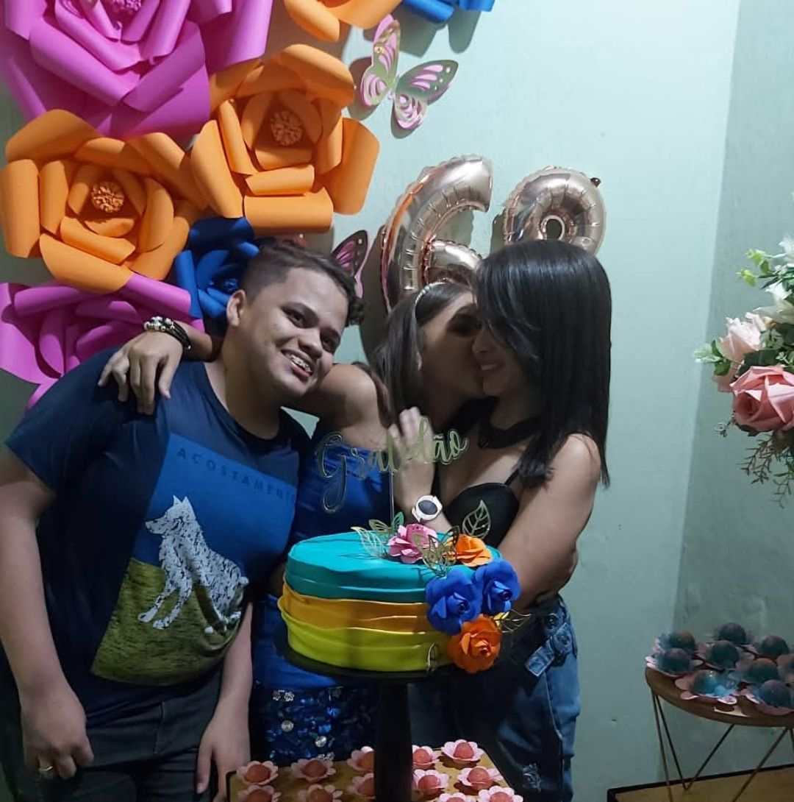

Meu nome é Cauane Victória e eu nasci no dia 08/01/2009, na cidade de Palmares-PE. Atualmente, tenho 16 anos e continuo morando na mesma cidade em que nasci, com minha mãe, minha avó e uma tia. Sou uma pessoa bastante introvertida e prefiro ficar no meu canto, sem interagir com muitas pessoas. Apesar disso, gosto de aprender coisas novas e me aventurar em desafios. Sou uma pessoa indecisa e competitiva, mas estou sempre disposta a melhorar. Minha personalidade, com quem eu conheço e convivo, é de alguém bastante estressada, mas também brincalhona, séria às vezes e bastante conversadora. Busco, acima de tudo, estar em constante evolução, e acredito que as experiências e as pessoas ao meu redor são fundamentais para isso.
Como mencionei, moro com a minha mãe e minha avó. Tenho dois irmãos, sendo eu a irmã do meio. Amo muito boa parte da minha família, especialmente a que mora comigo. Eles sempre me apoiam em tudo o que faço e me ajudam quando podem. Minha mãe e meu irmão mais velho são as minhas maiores inspirações. Quanto aos amigos, não tenho muitos, pois sinto uma certa dificuldade em fazer novas amizades e interagir. No entanto, tento sempre me abrir e isso é o que importa. Valorizo muito as poucas amizades que tenho e aprecio cada momento com eles.
Gosto de tirar fotos, brincar, ir a festas, cantar, dançar, assistir filmes e séries, jogar, conversar e ouvir músicas. Cada um desses hobbies me permite explorar diferentes formas de expressão e me ajuda a relaxar, me divertir e aprender coisas novas.
Meu animal favorito são os gatos. Tenho uma gata chamada Mia. Ela é bastante carinhosa, mas tem medo de pessoas novas. Adotei ela quando era bem novinha e, desde então, ela se tornou o meu xodó. A presença dela na minha vida é uma fonte constante de alegria e tranquilidade.
Estudei o ensino fundamental I e II na Escola Municipal Santa Luzia e entrei no Instituto Federal de Pernambuco (IFPE) no ano passado, no primeiro ano do ensino médio. Em ambas as escolas, a experiência foi positiva, mas a primeira escola é inesquecível, principalmente porque estudei por nove anos na mesma turma. Quando entrei no IFPE, não conhecia ninguém, então o ano passado foi um grande desafio para mim. Porém, essa experiência me ensinou a ser mais independente e a me adaptar a novos ambientes.
A minha ideia inicial, quando falavam sobre o ensino médio, era estudar onde meus amigos estavam e onde meu irmão mais velho havia estudado. No entanto, me falaram sobre uma escola excelente, que oferece uma ótima formação e paga aos alunos, mas para entrar, era preciso passar por uma prova. Decidi tentar, mais por curiosidade e pelo desafio de saber se seria capaz, e também porque fui incentivada a passar. Quando consegui, fiquei muito feliz, por saber que fui capaz. Decidi me dar a chance de viver essa nova experiência em uma escola onde não conhecia ninguém. No começo, me arrependi bastante, mas depois comecei a gostar do IFPE, e a experiência foi melhorando ao longo do tempo.
Tenho interesse em seguir uma carreira em advocacia, medicina ou biologia marinha. Ainda estou explorando essas possibilidades, mas sei que quero atuar em uma área onde eu possa ajudar as pessoas e contribuir para o bem-estar da sociedade, além de me sentir realizada profissionalmente.